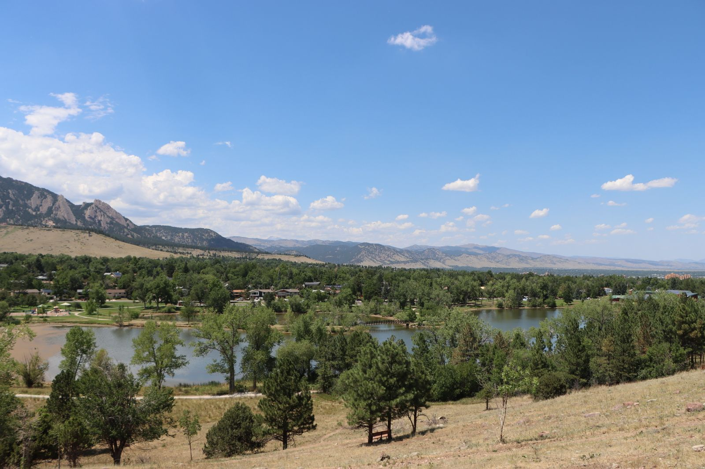

Jessica F. Magidson, PhD
Research
Overview
Dr. Jessica Magidson is a tenured Associate Professor in Psychology at the University of Maryland, College Park, the Director of the Center for Substance Use, Addiction & Health Research (CESAR), and the Director of IN-PLACE, an Interdisciplinary Network for Place-Based Learning, Action, & Community-Engaged EnvironMental Health—a UMD Grand Challenges-supported program to advance nature and mental health research, practice, and experiential learning at University of Maryland. Dr. Magidson has been the PI of over $25 million dollars in funding, largely from NIDA, NIMH, and Fogarty. She has over 160 peer-reviewed publications and book chapters focused on global mental health, addiction, and implementation science. Her sabbatical for the 2026-2027 academic year, based at CU Boulder, is advancing the field of nature and mental health through an Association for Psychological Science (APS) Sabbatical Award: How Nature Can Help Address the Mental Health Treatment Gap.
Dr. Magidson's research over the past two decades has focused on how to address the global mental health and substance use treatment gaps. She has focused on how to expand the reach of evidence-based behavioral interventions by training peers and community health workers all across the world. Her research program aims to foster bidirectional learning between ongoing research in sub-Saharan Africa and local collaborations in Maryland to improve the treatment of addiction and its impact on physical health comorbidities in underserved clinical settings globally. With a growing recognition that no matter how many providers we train, we will never have enough providers to meet the growing mental health treatment gap—she has expanded her current research to primarily focus on how nature can also help address the mental health treatment gap.
Current Nature and Mental Health Research
How Nature Can Address the Mental Health Treatment Gap
Dr. Magidson received a 2026 James McKeen Cattell Sabbatical Award—How Nature Can Help Address the Global Mental Health Treatment Gap to advance the science and practice of nature-informed cognitive behavioral therapy. The overall goal of the APS sabbatical award is to bridge evidence-based mental health interventions, such as cognitive behavioral therapy (CBT), with the benefits of nature exposure to improve patient and provider well-being. Through this sabbatical award, she aims to advance the field of nature and mental health and shift norms of practice for CBT providers to leverage the natural world—for themselves, their patients, and the environment.
Why? Globally, over 80% of people in need of mental health interventions do not receive care. Over the past decade, her team has shown that we can train people with lived experience and community health workers to expand access to care. Yet, no matter how many people we train, we will never have enough providers, and existing providers are facing high levels of burnout. What if one of the most scalable solutions to the global mental health crisis is not only inside of a clinic, but also outside of our doors?
Humans spend 93% of our lives indoors, despite decades of research demonstrating mental and physical health benefits of nature exposure. Through processes proposed in attention restoration theory, nature exposure can shift cognition, reduce burnout, and improve well-being. Yet, it is rarely integrated into evidence-based CBT approaches. This is the primary focus of her sabbatical to develop more evidence and easy-to-use resources to integrate nature into CBT.
IN-PLACE
IN-PLACE: Interdisciplinary Network for Place-based Learning, Action, & Community-Engaged EnvironMental Health (PI: Magidson) is a UMD Grand Challenge Initiative 2.0 Institutional Award to advance research, education, campus and community programming focused on nature and mental health.
Addressing the growing mental health burden globally is an urgent grand challenge of our time. Mental health remains one of the leading contributors to disability and loss of productivity. An estimated 80% of individuals globally who are experiencing mental health concerns do not receive care. Though service gaps are even higher in low-income countries, disparities also exist across the U.S., including on our campus and within our local communities. Research studies have demonstrated how experiences in nature can improve mental health and well-being. Yet, nature exposure has historically been inadequately integrated with evidence-based mental health care. Further, disparities exist in who can easily and safely access nature. Place-based disparities mirror the disparities in mental health access and treatment. Research has also shown that time spent in nature can increase pro-environmental behaviors. As global environmental sustainability crises contribute to mental health challenges, particularly among people in climate-impacted communities, efforts to invest in nature-based experiences will impact multiple societal grand challenges, including mental health, health equity, and environmental health.
IN-PLACE brings together diverse interdisciplinary perspectives and community partnerships to address three grand challenges—global mental health, health equity, and environmental health—that are inextricably linked. IN-PLACE focuses on nature-based experiences, environments, and interventions as the mechanisms for targeting these synergistic grand challenges. The core goals of IN-PLACE are to: (1) Research core: generate high-impact interdisciplinary research to support mental health; (2) Campus core: create new innovative, collaborative campus-based programming to support student, faculty, and staff well-being; (3) Community core: lead impactful, community-engaged research and programming to promote equity in access to nature-based mental health benefits in marginalized communities; and (4) Experiential learning core: promote novel nature-based experiential learning opportunities to equip the next generation of scholars and practitioners to address global mental and environmental health, centered on community-engaged principles. IN-PLACE aims to generate new research collaborations, reach students, faculty and staff through campus-based programming, and provide mental health training in underserved communities. The team is developing new community partnerships, including sustained collaboration with tribal, rural, and environmental justice partners. Community-engaged programming is impacting Maryland residents' nature access, and K–12 students and educators through place-based initiatives. IN-PLACE is also creating new experiential learning offerings and develop new courses with service-learning components. IN-PLACE is committed to improving the lives of millions of people, locally and globally, through increased access to both nature and mental health support.
Ready to talk about fit?
Please email to schedule an intake appointment and for additional information about the practice, potential fit, availability, and/or Dr. Magidson's other services offered.
Email Dr. Magidson